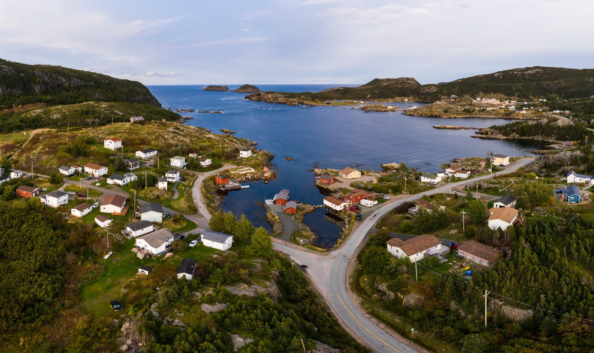

Discover Salvage
Walk the harbour, follow outdoor storyboards, and see the landscapes that shaped the community.

Salvage is a working fishing community. As a tourist destination, it is recognised for its historic fishing stages and natural scenic beauty. Located on Route 310, it is 7 km from the sandy beaches of Eastport and 30 km from Terra Nova National Park. For those interested in hiking, Salvage is at the centre of the 30+ km Damnable Trail network, one of which begins at the museum door. Nearby, the recently-opened Salvage Longhouse houses a coffee shop, restaurant, and brewery.
Outdoor storyboards around Salvage offer glimpses into the town's long history. Visitors can find storyboards at the museum, Wild Cove Beach, Backside Road, St. Stephen's Church, at the end of Sunday Avenue on Mountain View Road, and along the Damnable Trail Network.
Salvage remains a working fishing community, with fishing stages, schooners, and seasonal fisheries for species such as lobster, crab, capelin, cod, and squid.
St. Stephen's Anglican Church and six nearby cemeteries connect visitors to the parish history of Salvage and surrounding communities.
Storyboards at Roundhead, Burden's Point, Net Point, Edythe's Lookout, and other locations help connect museum stories to the landscape.
The Damnable Trail network offers coastal walks and longer hikes through the rugged landscape of Salvage. Depending on weather and trail conditions, visitors can choose short walks of about 20 minutes or longer hikes lasting several hours. More information on the Damnable Trail System can be found here.
The museum has trail information, maps, and local guidance available on site. Trail parking is commonly available near the top end of Sunday Avenue and off Beach Road.